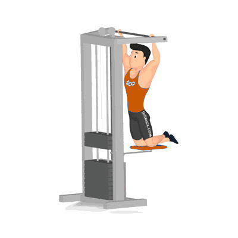

Puxada no Gravitron

Exercício para fortalecimento e hipertrofia da região das dorsais, abrange também, músculos auxiliares, tais como, trapézio e bíceps braquial. O praticante deve elevar o próprio peso, com necessidade de um preparo físico e potência muscular. Indicado a praticante de musculação nível avançado.
Ficha Técnica
Tipo: Musculação
Grupo Muscular: Costas
Aparelho: Nenhum
Músculos: Nenhum
Como realizar
- Segure a barra fixa no aparelho com as palmas das mãos voltadas para frente em uma distância maior do que a dos ombros;
- Pernas apoiadas no suporte do aparelho, cotovelos estendidos e o tronco ligeiramente inclinado trás;
- Manter a inclinação do corpo, eleve o peito em direção a barra com os cotovelos para trás;
- Continue o movimento até a cabeça ultrapassar a linha das mãos;
- Desça o corpo estendendo os cotovelos novamente de forma controlada, repita o movimento.
 RC STORE
RC STORE